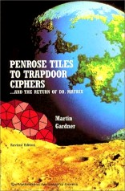
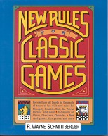
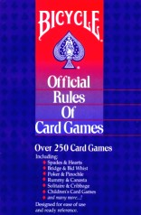
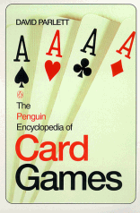
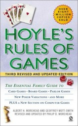

| Eleusis—publication history: | ||
|
The original version of Eleusis was introduced by Martin Gardner in his “Mathematical Games” column in the June 1959 Scientific American. That column is reprinted in Origami, Eleusis, and the Soma Cube The original version of Eleusis also appeared in my 1963 book Abbott’s New Card Games. | ||
|
A revised version of Eleusis appeared in 1977. It was introduced by Martin Gardner in his column for the October 1977 Scientific American (this column is reprinted in Gardner’s Penrose Tiles to Trapdoor Ciphers). That same year I privately published my booklet The New Eleusis. |  | |
|
In 1992, Eleusis appeared in Wayne Schmittberger’s book, New Rules for Classic Games. This was the first general collection of games to include Eleusis.
|  | |
|
In 1999, Eleusis was in the Bicycle Official Rules of Card Games, edited by Joli Kansil and Tom Braunlich. I was especially pleased to be in that book because it’s a series published by the U.S. Playing Card Company that goes back to 1887. This edition is the first to include a new game since, I think, Canasta. |
 | |
|
In 2000, Eleusis appeared in the Penguin Encyclopedia of Card Games, by David Parlett. Parlett is the world’s leading expert on card games and this book is an informative and entertaining general collection. It is currently available only in Britain and Canada (you can click here for the British Amazon.co.uk entry for the book). I don’t know if there will be an American edition. |  | |
|
In December 2001, Eleusis, as well as my old card game Variety, appeared in Hoyle’s Rules of Games (you can click here for my page about the book). This is the latest revision of the most popular of all the game collections. It is published in every English-speaking country. |  | |
|
| ||